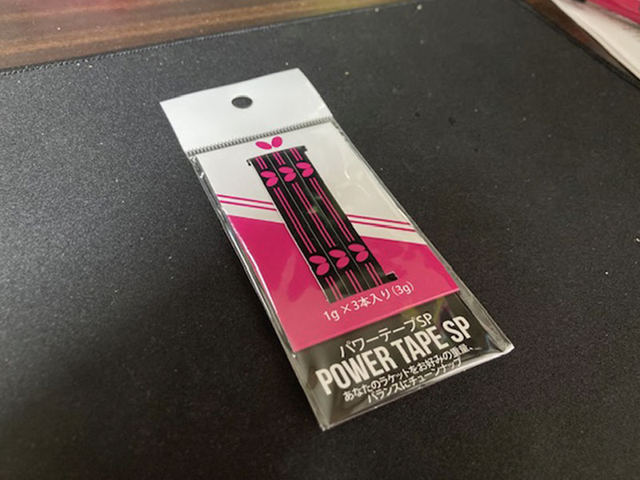
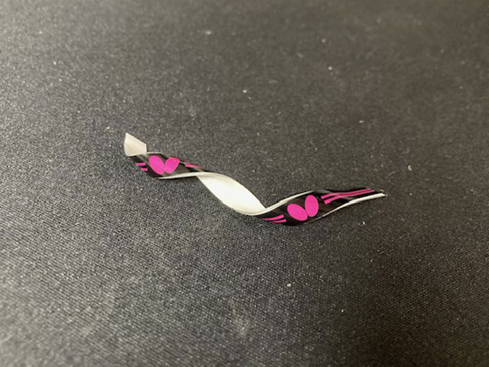

中級者おすすめアイテム
バタフライ「パワーテープ」
ラバーやラケットにはこだわっていても、 ラケットの重さまで意識している方は意外と少ないかもしれません。
特に初心者・初級者のうちは、 あまり馴染みのないアイテムではないでしょうか。
今回ご紹介するのは、 バタフライの 「パワーテープ」 です。

ラケットの側面に貼って重量バランスを調整するアイテムで、 見た目は平らな鉛テープに両面テープが付いたような形状をしています。
柔らかい素材なのでハサミで簡単にカットでき、 1g単位で細かな重量調整 が可能です。
さらに、バタフライらしいデザインも魅力の一つ。
ラケットをさりげなくドレスアップしながら、パワーアップ！ 重量バランスを調整できるおすすめのアクセサリーです。
お気づきの方いないと思いますが、「今日もネットイン日和」のサイドのデザインは 実はパワーテープをイメージしてデザインしました笑。(すごいどうでもいい)
パワーテープはどんな時に使う？
一番おすすめなのは、 ラバーを貼り替えた時 です。
違うラバーに張り替えたり、同じラバーでも 個体差や厚さによってラケット全体の重量が変わることがあります。
その結果、
- なんだか軽く感じる
- 以前よりボールを捉えにくい
- 打球の威力が少し落ちた気がする
- スイングのタイミングに違和感がある
と感じることもあります。
そのような時にパワーテープを使うことで、 以前に近い重量や重心バランスへ調整できる場合があります。
この場合はやむなく、重たくしなきゃと思いますが、 本来はラケットを重くしてパワーをつけたい時に使うのが通常の使い方です。
ラバーを買い替える前に、 まずは1〜2gだけ重量を足してみる。
それだけでも、打球感や振り抜きやすさが変わることがあります。

基本的な貼り方は4種類
パワーテープは、 貼る位置によってラケットの重心や振りやすさが変わります。
主な貼り方は、次の4種類です。
1. 先端型
ラケットの一番先端部分へ貼る方法です。
重心が先端へ移動するため、 スイング時の遠心力が大きくなり、 ドライブやスマッシュの威力アップが期待できます。
- フォアドライブの威力を高めたい
- ミート打ちを強くしたい
- フォア主体で攻めたい
といった方に向いています。
特に、回り込んでフォアハンドで攻めることが多い選手や、 オールフォア型のプレーヤーと相性の良い貼り方です。
2. 先端バランス型
ラケット先端の左右へ、 バランスよく2枚貼る方法です。
先端型の威力を残しながら、 左右の重さを整えやすいのが特徴です。
フォアハンドとバックハンドの切り返しでも、 ラケット面を安定させやすくなります。
- フォアドライブとバックドライブを両方使う
- 両ハンドで前陣から攻めたい
- 威力と切り返しの両方を重視したい
という現代的な両ハンドプレーヤーにおすすめです。
3. バランス型
ラケット側面の中央付近へ貼る方法です。
ラケット全体の重量は増えますが、 重心が極端に先端へ寄らないため、 数値ほど重く感じにくいのが特徴です。
操作性を大きく損なわずに、
- 打球の安定感
- ブロックの押し負けにくさ
- ドライブの球質
- ラケット全体の振りやすさ
を高めたい方に向いています。
両ハンドでバランスよく攻める選手にも使いやすい貼り方です。
4. 手元バランス型
グリップに近い側面へ、 左右2枚を貼る方法です。
重心が手元へ近づくため、 ラケットの操作性を保ちやすくなります。
- ブロック
- カウンター
- 台上技術
- フォアとバックの素早い切り返し
など、細かなラケットワークを重視するプレースタイルに適しています。
重量は増やしたいものの、 先端が重くなる感覚は避けたい方にもおすすめです。
貼る前に確認したいポイント
パワーテープは手軽に試せるアイテムですが、 一度にたくさん貼る必要はありません。
まずは1g程度から試し、 実際に素振りやラリーをしながら調整していくのがおすすめです。
- ラケット全体の重量
- 先端の重さ
- フォア・バックの切り返し
- ドライブの振り抜き
- ブロック時の安定感
これらを確認しながら、 自分に合った位置と重さを探してみましょう。
重くすれば必ず威力が上がるわけではありません。
自分が無理なく振れる範囲で調整することが大切です。
ラケットを替える前に試したいチューンアップ
ラバーやラケットを交換することも、 用具選びの楽しさの一つです。
しかし、少し違和感があるたびに用具を買い替えていると、 費用もかかります。
その点、パワーテープであれば、 今使っているラケットを活かしながら、 低コストで細かな調整ができます。
ラバーを貼り替えた後に軽くなったと感じた時や、 打球の安定感をもう少し高めたい時は、 ラバーやラケットをかえるのではなく 一度試してみる価値がありそうです。
まとめ
バタフライのパワーテープは、 ラケットの側面に貼ることで、 重量や重心バランスを細かく調整できるアイテムです。
貼る位置によって、
- 先端型は威力重視
- 先端バランス型は両ハンドの攻撃重視
- バランス型は安定感と操作性重視
- 手元バランス型は切り返しと台上技術重視
といった違いがあります。
わずか1gが、打球感を変えるかもしれない。
"Small Changes. Better Balance."